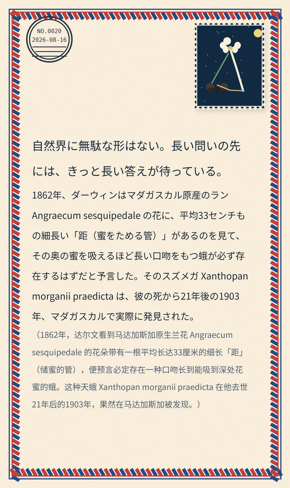

自然界に無駄な形はない。長い問いの先には、きっと長い答えが待っている。
1862年、ダーウィンはマダガスカル原産のラン Angraecum sesquipedale の花に、平均33センチもの細長い「距（蜜をためる管）」があるのを見て、その奥の蜜を吸えるほど長い口吻をもつ蛾が必ず存在するはずだと予言した。そのスズメガ Xanthopan morganii praedicta は、彼の死から21年後の1903年、マダガスカルで実際に発見された。（1862年，达尔文看到马达加斯加原生兰花 Angraecum sesquipedale 的花朵带有一根平均长达33厘米的细长「距」（储蜜的管），便预言必定存在一种口吻长到能吸到深处花蜜的蛾。这种天蛾 Xanthopan morganii praedicta 在他去世21年后的1903年，果然在马达加斯加被发现。）